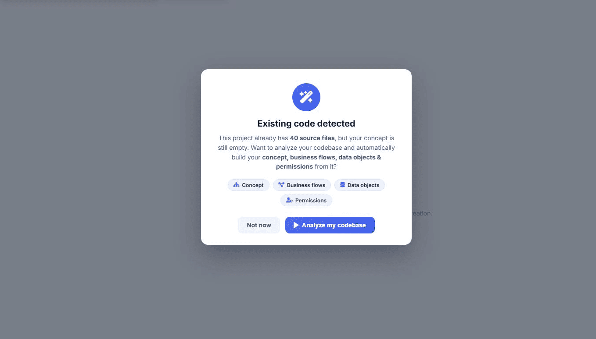
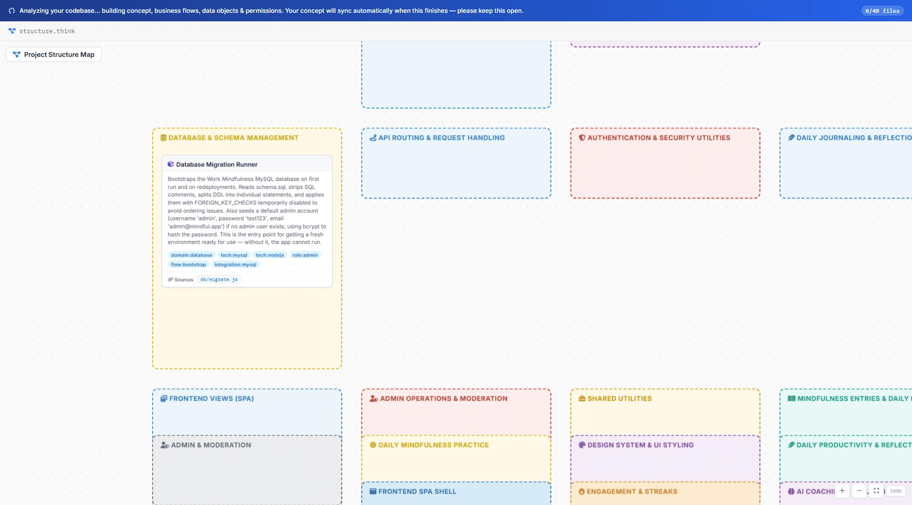

Generating Concepts and Designs from Source Code
Projects created or imported in Developer Mode may contain existing source code. When switching to Designer Mode, either from the project workspace or the project list, the system automatically checks whether concepts and design artifacts have already been generated from the available source code.
If no concepts or design artifacts exist, a confirmation prompt is displayed. After confirmation, the system analyzes the source code and automatically generates the project's concepts, design artifacts, workflows, and related documentation.
Upon completion, the project opens in Designer Mode, allowing users to immediately review and work with the generated concepts, designs, and associated artifacts.

